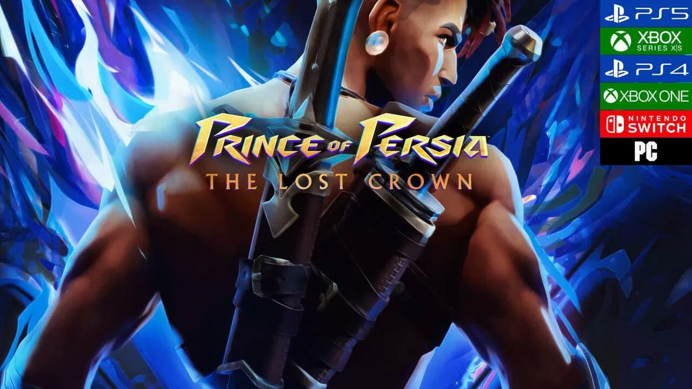
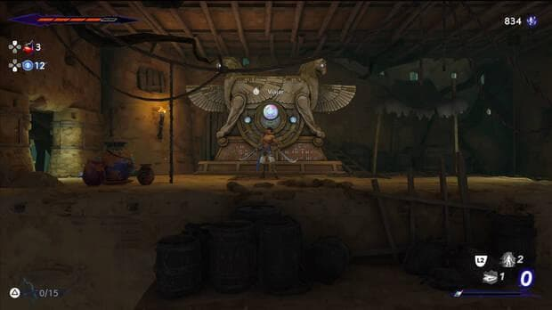
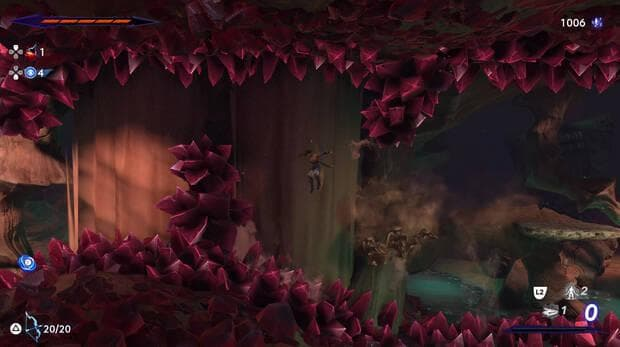
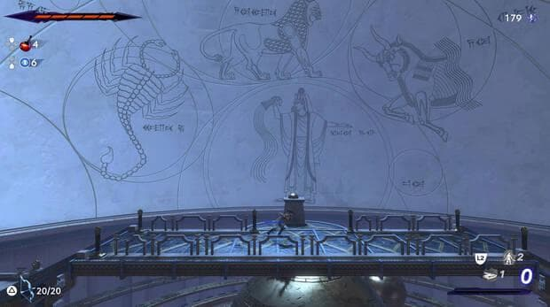
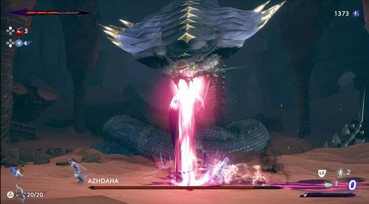
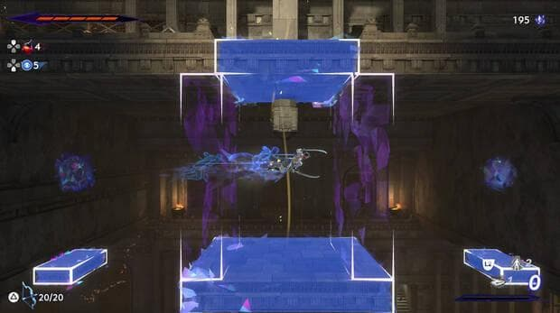
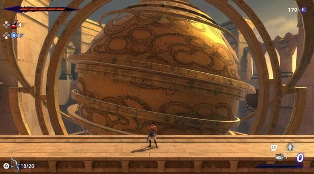
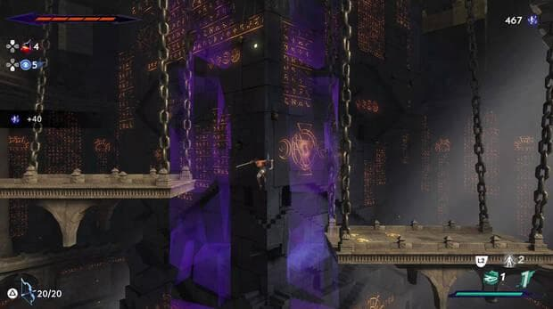

Análisis Prince of Persia: The Lost Crown, un metroidvania imprescindible con el que inaugurar 2024 de la mejor forma posible
La icónica saga creada por Jordan Mechner regresa por todo lo alto tras años de ausencia con un metroidvania ejemplar que triunfa en casi todo lo que se propone.
Análisis de versiones PS5, PC, Xbox Series X/S, Switch, Xbox One y PS4.
El tiempo es un concepto fascinante y a la vez terrorífico con el que el ser humano tiende a obsesionarse, algo que la fantasía y la ciencia ficción suelen aprovechar en su favor para retorcer sus reglas y crear historias y relatos únicos que capten nuestra imaginación mostrándonos esta idea no como un río que fluye seguro y veloz en una dirección, sino como un océano en la tormenta.
Por supuesto, los viajes temporales y la manipulación del tiempo son un elemento recurrente también en videojuegos y pocos ejemplos mejores se nos ocurren sobre esto que la trilogía original de 128 bits de Prince of Persia: Las Arenas del Tiempo, una de las más recordadas, influyentes y queridas de la época, la cual supuso un sorprendente reinicio para la icónica saga creada por Jordan Mechner en 1989.
Lamentablemente, el tiempo a veces es caprichoso y hemos tenido que aguardar la friolera de 14 años para poder disfrutar de una nueva entrega de la serie, una dura espera que por fin termina con la llegada de Prince of Persia: The Lost Crown, una nueva vuelta de tuerca para la licencia que nos ha conquistado y que confirma el regreso triunfal de todo un mito de los videojuegos.
La maldición del monte Qaf
Lo primero que tenemos que dejar claro es que esta vez no nos encontramos ante una aventura de plataformas y acción 3D, sino ante un completísimo metroidvania 2D en el que es igual de importante nuestra habilidad saltando que nuestro dominio de la espada, suponiendo así un nuevo reinicio tanto jugable como narrativo.
Por primera vez en la serie, la historia no nos pone en la piel del príncipe titular, sino de Sargon, el miembro más joven de los Inmortales, un grupo de poderosos guerreros que mantiene Persia a salvo protegiéndola de cualquier amenaza. La trama nos narra cómo estos héroes emprenden un viaje hacia el monte Qaf en una misión de rescate para salvar al príncipe Ghassan, un lugar maldito en el que el tiempo está roto y no funciona como debería.
Desafortunadamente, ni el guion ni la propia narrativa nos han convencido, dejándonos con un relato mal contado, con numerosos agujeros, fallos de coherencia interna y ciertos deslices que cuesta pasar por alto, especialmente cuando todo lo que sucede durante los eventos principales es realmente simple y podría resumirse en un par de líneas. A cambio, tenemos a unos personajes carismáticos que quedan muy desaprovechados y un trasfondo que sí que nos ha gustado bastante por la forma en la que construye su mundo a través de leyendas, mitos y cuentos, lo que nos ha animado a explorar para encontrar documentos y coleccionables con los que descubrir las historias que esconden cada una de las zonas que conforman el mapa de la aventura.
Un metroidvania fascinante con un "plataformeo" exquisito
Centrándonos ya en lo puramente jugable, The Lost Crown nos deleita con un metroidvania de manual que sigue punto por punto las claves habituales del género, así que podéis esperar un gigantesco mapa interconectado por el que movernos sorteando todo tipo de peligros, luchando contra monstruos, encontrando tesoros, derrotando jefes y, por supuesto, obteniendo nuevas habilidades que nos permitirán llegar a lugares y secretos previamente inaccesibles, convirtiendo el backtracking en una constante durante toda la aventura.
Algo que destaca desde el primer minuto es el excelente control del personaje, preciso y satisfactorio como muy pocas veces hemos visto en un título de estas características. Sargon es muy ágil y cuenta con una enorme gama de movimientos distintos que le permiten desplazarse a toda velocidad por los escenarios realizando todo tipo de piruetas, y su respuesta a los mandos es simple y llanamente perfecta, hasta el punto de conseguir que el simple hecho de movernos resulte en una acción tremendamente divertida.
Este esfuerzo que se ha invertido en los controles se entiende rápidamente cuando nos damos cuenta de que estamos ante un metroidvania que apuesta de forma decidida por las plataformas, seña de identidad de la saga y que aquí tienen un protagonismo enorme con numerosas y desafiantes secciones en las que nos van a obligar a encadenar multitud de habilidades y acrobacias con una precisión absoluta mientras evitamos pinchos, enemigos, trampas y usamos en nuestro favor los distintos mecanismos de cada zona.
Es un "plataformeo" que, por momentos, nos ha llegado a recordar a lo visto en Celeste y en la saga Ori, con secuencias que parecen pequeños rompecabezas donde debemos averiguar qué movimientos hacer y cómo a la vez que nos tiramos más de un minuto en el aire sin tocar el suelo haciendo gala de todas nuestras habilidades y reflejos.
Pero, sin duda alguna, lo mejor de todo esto y lo que le da muchísima personalidad son los poderes que iremos aprendiendo. Sí, tenemos cosas tan habituales como el doble salto y el impulso aéreo, aunque a esto debemos sumarle una serie de técnicas bastante originales que esconden usos muy creativos e ingeniosos que nos han obligado a cambiar el chip y a pensar de forma diferente a la hora de afrontar los retos que nos hemos encontrado. Por supuesto, hay habilidades que implican manipular el tiempo de diferentes formas, y el diseño de niveles busca sorprendernos constantemente con nuevas mecánicas y obstáculos, un conjunto de factores que acaba favoreciendo las que son, desde ya, algunas de las mejores y más gratificantes secciones de plataformas que hemos visto nunca en el género.
Un mapa con un diseño de niveles ejemplar
Y ya que hablamos del diseño de niveles, nos vemos obligados a aplaudir el monumental trabajo de Ubisoft Montpellier a la hora de crear un mapa enorme que no deja de abrirse en todas direcciones de una forma milimétricamente calculada. Siempre hay numerosos caminos para investigar que suelen llevarnos a lugares, retos y recompensas interesantes y que merecen la pena, las conexiones entre las regiones y los atajos que vamos desbloqueando están colocados a la perfección, el backtracking es ágil y muy placentero gracias a los poderes que vamos obteniendo y la consecución de estos últimos marcan auténticos hitos en nuestro progreso, pues nos abren infinidad de posibilidades y muchísimas rutas nuevas que siempre estaremos deseando explorar.
Como resultado, el juego siempre nos está animando a explorar, invitándonos a que queramos verlo todo mientras disfrutamos moviéndonos de un sitio a otro gracias al inteligente diseño del que hacen gala sus escenarios. Por si no fuese suficiente, en lo jugable también nos sorprenden con un auténtico bombardeo de ideas, ya que cada región cuenta con sus propias mecánicas, enemigos y peculiaridades que cambian por completo nuestra manera de movernos por ellas. Tan pronto estaremos explorando un lugar a oscuras con solo una pequeña fuente de luz para iluminar nuestro camino que siendo sigilosos para que no nos detecte un enemigo aparentemente inmortal o intentando sobrevivir a unos bloques que se activan con la intención de aplastarnos al pasar por ciertos paneles, por mencionar tan solo unos pocos ejemplos.
Gracias a esto, cada zona es completamente única y tiene una personalidad muy marcada, lo que acaba traduciéndose en una aventura variadísima y muy divertida que, en nuestra opinión, solo flojea en la última región, donde da la impresión de quedarse sin ideas para apostar por un "plataformeo" más estándar y con un desarrollo que pierde gran parte de su frescura . E incluso así, el nivel del tramo final sigue siendo bastante alto.
Un sistema de combate repleto de posibilidades y unos jefes envidiables
Ahora bien, no os vayáis a pensar que en The Lost Crown solo importan los saltos, ya que la acción también tiene muchísimo protagonismo y no vamos a parar de encontrarnos monstruos con los que vamos a tener que aprender a lidiar. Al principio, el sistema de combate puede parecer muy simple, con un botón de ataque, otro para esquivar y uno adicional para bloquear, pero a poco que empecemos a rascar nos daremos cuenta de que esconde muchísima profundidad, permitiéndonos alterar la altura de nuestros golpes, enviar a los enemigos al aire para continuar castigándolos en el cielo, estamparlos contra el suelo y las paredes para que reboten y desatar nuestras técnicas definitivas al rellenar el medidor correspondiente a base de ataques y paradas perfectas.
Evidentemente, todos los movimientos y poderes que aprenderemos a lo largo de la aventura no nos servirán solo para "plataformear", explorar y resolver puzles, sino que también tienen todo tipo de originales aplicaciones y utilidades en combate, dándonos rienda suelta para crear elaborados y espectaculares combos de lo más imaginativos a poco que seamos mínimamente habilidosos y creativos a los mandos.
Gracias a esto, a la vertiginosa velocidad a la que se desarrollan los enfrentamientos, al perfecto funcionamiento de las cajas de colisiones y a la puesta en escena que tienen los duelos con golpes que nos hacen sentir toda su potencia, combatir se convierte en una experiencia accesible y profunda, pero, sobre todo, muy divertida y cuya inspiración en juegos de lucha como Super Smash Bros. o Street Fighter (algo admitido por Mounir Radi, su director) se deja notar positivamente.
Además, el título cuenta con un bestiario extensísimo y enormemente variado, por lo que nunca dejaremos de toparnos con nuevas criaturas a las que hacer frente, cada una de ellas con sus propias peculiaridades, patrones, debilidades y características únicas a tener en cuenta.
Pero, sin duda alguna, el plato fuerte lo tenemos en los jefes, quienes nos ofrecen unas batallas épicas, intensas, espectaculares, variadas, con numerosas fases y con unos patrones exquisitos que no van a dejar indiferente a nadie. Son una completa y absoluta maravilla y no ha habido ni uno solo de ellos que no nos haya dejado con la boca abierta, incluyendo uno casi al final de la historia principal que nos ha deleitado con uno de los mejores duelos que hemos vivido nunca en un juego de este subgénero, lo que no es decir precisamente poco.
Por cierto, el título incluye numerosas opciones para personalizar la dificultad de los combates y las configuraciones que hay por defecto dan justo lo que prometen. De las cuatro que hay, nosotros hemos jugado en Difícil (la segunda más alta) y os podemos asegurar que nos han obligado a jugar prestando muchísima atención y castigando duramente nuestros errores, lo que nos ha permitido disfrutar de un reto muy estimulante que nunca llega a ser frustrante o injusto.
Una aventura larga y generosa en contenidos
Cambiando un poco de tercio, cabe destacar que estamos ante un título con una duración más que generosa. Para que os hagáis una idea, creíamos haber explorado bastante cuando llegamos a los títulos de créditos en 17 horas, pero el porcentaje de juego completado apenas nos marcaba un 70 %, así que si aspiráis a verlo y conseguirlo todo, la cifra total puede ascender hasta las 25 o 30 horas fácilmente, dependiendo de la velocidad a la que juguéis, un número que nos parece perfecto para el tipo de juego que es.
Además, tal y como dijimos con anterioridad, explorar siempre nos recompensa con algo interesante y que suele merecer la pena, desde documentos y coleccionables que nos narran más sobre su mundo hasta nuevos desafíos, minijefes ocultos, mejoras de vida, misiones secundarias, ingeniosos acertijos, nuevos amuletos con los que mejorar a nuestro personaje, cristales temporales que invertir en las tiendas o minerales con los que mejorar nuestras espadas y nuestro arco, por citar unos pocos ejemplos.
Gráficamente discreto y con algunos problemas técnicos, pero que compensa con una buena dirección de arte y un rendimiento impecable
En lo que respecta a su apartado gráfico, tenemos que decir que es, sin duda alguna, el punto más discreto de toda la aventura junto a su historia y narrativa. Con esto no queremos decir que se vea mal, pero sí que resulta difícil obviar que en lo técnico es un título muy sencillo que no destaca precisamente ni por sus texturas, ni por el detalle de sus escenarios ni por la complejidad de sus modelos de personajes o efectos, algo que concuerda con el objetivo de sus desarrolladores de que se mueva a 60 imágenes por segundo como mínimo en todas las plataformas, incluyendo Switch.
La buena noticia es que estas carencias son disimuladas con su dirección de arte y su puesta en escena, las dos principales culpables de conseguir que el título haga gala de un aspecto muy resultón que lo hace muy agradable a la vista, algo que gana enteros cuando lo vemos en movimientos gracias a sus cuidadísimas, variadas y fluidas animaciones, las cuales sí que son incuestionablemente sobresalientes. Y mucho ojo con el espectáculo que los jefes más importantes llegan a poner en pantalla.
Además, esto es algo que las consolas de nueva generación aprovechan en su favor para permitirnos jugar a una resolución de 4K y a 120 imágenes por segundo con un rendimiento ejemplar en todas las horas que le hemos dedicado en nuestra PS5, reforzando más incluso las magníficas sensaciones que transmite a los mandos.
Por desgracia, nos toca comentar que hemos sufrido un buen puñado de errores de programación, la mayoría de ellos bastante molestos, incluyendo alguno que otro que nos ha arruinado por completo algunos de los mejores momentos de esta odisea. No es que sean muy comunes ni muy frecuentes (la mayor parte del tiempo hemos jugador sin incidentes), pero sí que nos toca hablar de una misión secundaria que no hemos podido completar por culpa de un bug, de secuencias de vídeo que se han quedado en negro sin mostrarnos la imagen, de efectos de sonido que desaparecían, de escenas en las que los personajes no mueven la boca o de jefes y eventos en los que no se activaba su canción correspondiente. Como decimos, no son una constante, pero sí que le vendría bien una capa de pulido adicional, la cual, con suerte, llegará con sus primeros parches. A fin de cuentas, sería una pena que un juegazo como este quedase empañado por algo como esto.
Finalmente, la banda sonora nos deleita con una buena selección de temas que, por lo general, son de corte ambiental y estilo árabe, aunque también hay composiciones muy épicas e intensas para los combates contra los jefes que terminan de poner la guinda a estos enfrentamientos. Por su parte, los efectos también son de calidad y las voces nos llegan con un buen doblaje al español.
Conclusiones
Prince of Persia: The Lost Crown es un metroidvania imprescindible que tiene prácticamente todo lo que le podemos pedir a un juego de este estilo: unos controles exquisitos, un diseño de niveles sobresaliente, unas secciones de plataformas increíblemente gratificantes, un sistema de combate divertidísimo con un bestiario variadísimo y unos jefes memorables, una cantidad de contenidos más que generosa y una selección de poderes en la que hay espacio para habilidades muy originales que deberemos usar de formas ingeniosas y creativas tanto para explorar como para combatir, "plataformear" y resolver puzles. Sí, su historia y narrativa dejan que desear, gráficamente no es ninguna maravilla y no se libra de algunos errores de programación, pero si os gusta el género y echabais de menos esta mítica saga, aquí tenéis todo un juegazo con el que empezar el año de la mejor manera posible.